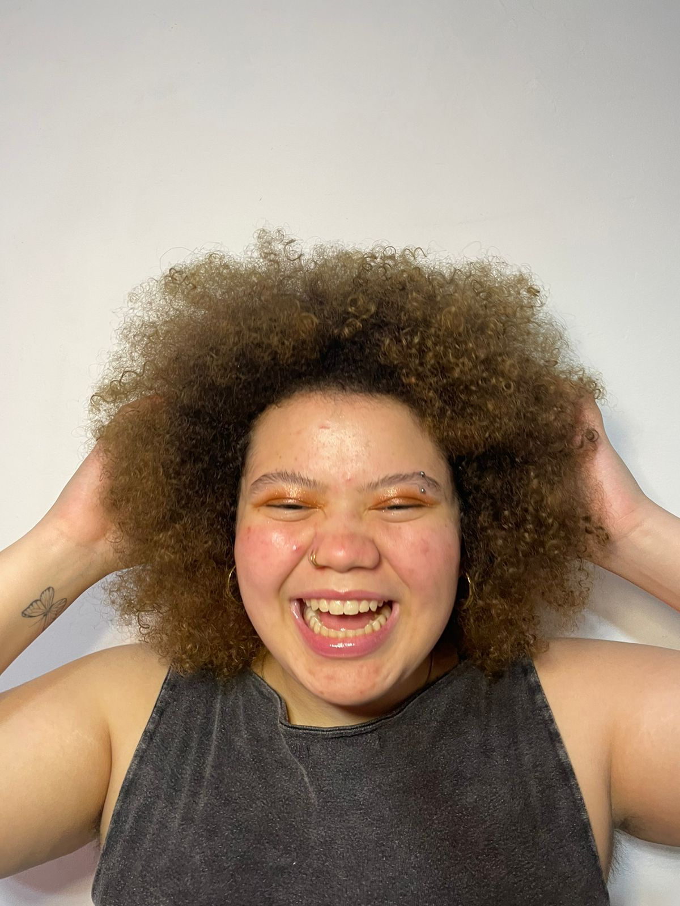
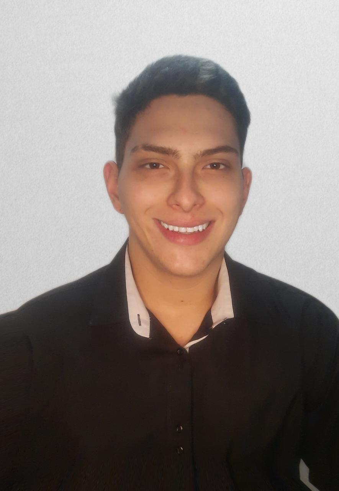
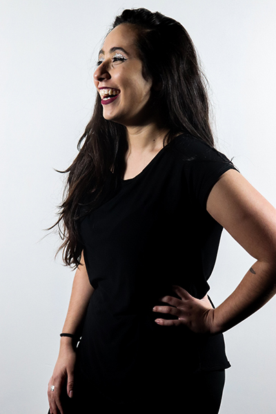
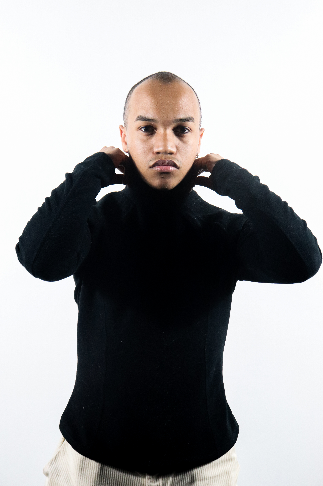
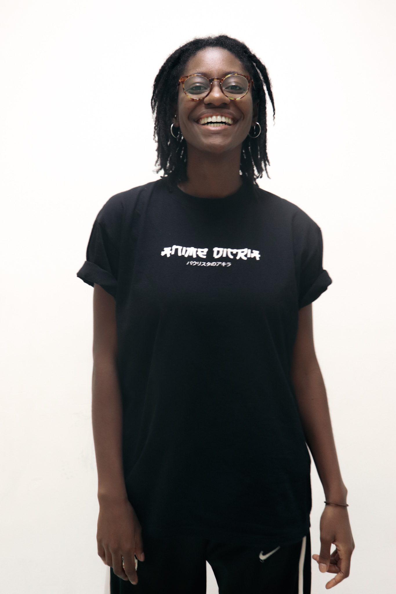
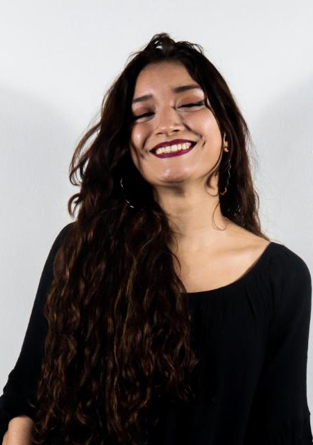

-

Becky
19, paulista da periferia da zona norte. artista, atriz e um ser. estudante de teatro, cenografia e figurino. apaixonada pelo mar e por sorvete. estagiária da vida. tenho pesadelos com tsunamis e solidão. esse é um pedacinho de mim. -
Bruno Cezar Costa
Pesquisador e discente de teatro pelo Senac São Miguel paulista, estudou educação somática na dança pelo curso de extensão da Escola Livre de Dança de Santo André, ministrou cursos junto ao grupo de estudos na Faculdade de Belas Artes do Porto (Portugal) por meio do IV Encontro internacional de reflexão sobre práticas artísticas comunitárias e do II Encontro internacional de práticas somáticas e dança promovido pelo Instituto Federal de Brasília. Transita entre as linguagens da música, performance e intervenção urbana, integra o grupo interdisciplinar de estudos e pesquisas Práticas de Toque e Cuidado, a partir da abordagem somática Eutonia e de leituras que tratam o sentido do toque em seus aspectos políticos, sociais e filosóficos. -

Gabi Duarte
Oi! Sou a Gabi, porém o pessoal do grupo me chama de Duarte. Pisciana com a ascendente em áries, cheia de sonhos e vontades! Sou fotógrafa pois amo registrar momentos para serem lembrados. Fiz Tribo Urbana por quatro anos, um projeto Juventudes do Sesc Consolação. Quer sonhar comigo? Siga meu Instagram e se conecte junto a mim em minha paixão em fotografar :@_nomeufoco -

Gabi Miguel
29 anos, natural de Pedreiras-Maranhão. Atriz, performer e nutricionista. -

Israel
Parece que foi ontem que me peguei pensando como seria minha vida. Estranho e encorajador é se autobiografar, então prazer, sou o Rael, tenho 22 anos até o momento dessa escrita e sempre me encontrei na sensibilidade das artes, e poder me expressar, da maneira que fosse, sempre foi o que de fato me definiu. Através do teatro e da música coloco minha transparência e sensibilidade, desde os meus 13 anos. Agradeço pelo pouco que me tornei, ou pelo muito que extrapolei. Atuei e cantei em algumas peças de teatro, me envolvi em alguns projetos e sempre estudei desde criança. Durante mto tempo eu quis ser um alguém diferente do que sou, mas hoje eu sei que a melhor coisa que eu posso ser na minha essência é esse ator, estudante da vida, mulekao grandão, bobo, e artista. Ah, principalmente, feliz. -

Jullie Grijó
BH-MG. artista, programadora, comunicóloga e neurótica. -

Larissa Pacciulli
Sou amante do teatro, fiz 4 anos de Tribo Urbana pelo Sesc Consolação, fiz coralidades performáticas pela SP Escola de teatro, faço tarot a 3 anos e sou apaixonada por arte. Tenho um filho com quem gosto de passar todo o meu tempo livre, trabalho atualmente com tarot Quem quiser saber mais sobre @pacciulli.tarot Instagram pessoal:@ _pacciulli -

Luau
Do signo de gêmeos com ascendente em leão, faço o meu nome: Prazer, sou o Luau. Nasci em 17 de junho de 2002. Desde que me conheço por gente, eu curto arte, moda e cultura… Antes eu queria ser tudo no mundo artístico e foi na produção cultural que vi, que poderia ser tudo aquilo e melhor produzir tudo isso!!! Sempre trazendo o olhar da arte e cultura periférica e assim me tornando multiartista. Muitos falam que temos uma missão aqui na terra, a minha é produzir e construir arte , para que ela seja vista e vivida por todes. Pois todos aqueles que já foram e deixaram seus legados pelos becos e vielas que passei, me ensinaram que arte salva! Que um dia todos nós tenhamos a liberdade de sonhar, produzir, atuar, dançar, cantar e ser mostrar!!! -

Marcela
Tenho 18 anos, sou apaixonada por desenho, sonhadora de tsunamis e amante de Flinstones. -

Matheus Luís
Tem 26 anos, pretende fazer design de games e trabalhar na área da tecnologia. Gosta de curiosidades, inúteis e úteis também, e obviamente gosta muito de jogar. -

Raphaella Rosa
26 anos, atriz, modelo, integrante do grupo de pesquisa artística Sonhário Vivo, vencedora do prêmio de melhor interpretação pela atuação no curta Como Respirar Fora D’água na competitiva Brasil de curtas do 29• Festival Mix Brasil em 2021. -

Raquel Tatajuba Lira
Pisciana de 21 anos, graduanda de ciências Biológicas, ex monitora cultural e mãe. Amo registrar momentos ou coisas que acho importantes no meio ambiente por desenhos ou na maioria das vezes em fotos pelo celular. Sonhar com o LAB tem sido uma experiência única que levarei no coração até o fim da vida, pelos amigos que criei e pelas coisas novas que aprendi. Instagram: @kell_tatajuba

